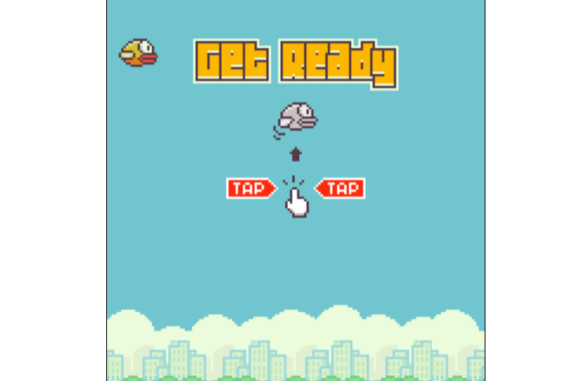

Projeto Gráfico
Projeto desenvolvido para saber qual é o calçado mais consumido tanto no mundo tanto no colégio Tancredo

Você decide
Nesse breve jogo você poderá fazer diferentes escolhas numa situação um pouco assustadora, boa sorte!
Número Secreto
Nesse site engraçado, você jogará um jogo onde poderá adivinhar o número secreto através do comando de voz.

Flappy Bird
Nesse remake do famoso jogo do Flappy Bird, você jogará com um pássaro feito por um aluno.
Python Farmácia
Um pequeno projeto realizado em python sobre medicamentos.
Farmácia bem-estar
Outro projeto python sobre farmáica, mas a diferença desse é que o usuário pode interagir.